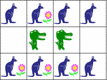
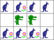

الحل
يجب النقر على الكنغر الذي يوجد أعلاه تمساح ، ثم التحقق من الصحة.
على سبيل المثال:

يجب عليك النقر على الكنغر الذي لديه تمساح واحد بجانبه.
وبعبارة أخرى ، انقر فوق الكنغر الذي لديه تمساح فوقه ، وعلى أولئك الذين لديهم تمساح تحتها ، ولكن ليس على الكنغر الذي لديه واحد في كل مرة تمساح أعلاه وواحد أدناه.
على سبيل المثال:

يجب النقر على الكنغر الذي لديه:
- تمساحًا أعلاه ودبًا أسفله.
- دبًا أعلاه ولا يوجد شيء أدناه.
- تمساحًا أسفل دون أي شيء أعلاه.
على سبيل المثال:
المعلوماتية
يعالج هذا الموضوع مفهوم الحالة المنطقية : يتلقى الكنغر زهرة إذا كان هذا وذاك ولكن ليس هذا. الشروط إذا ... إذن هي واحدة من اللبنات الأساسية للغات البرمجة.
بتعبير أدق ، يكون الموضوع نوعًا من التشغيل التلقائي الخلوي ، حيث لدينا شبكة يتم تحديد محتوى المربع أثناء الخطوة وفقًا لمحتواه ومحتوى الصناديق المجاورة له في الخطوة السابقة.
يتم استخدام بعض الأتمتة الخلوية لدراسة الأنظمة المعقدة ، في الفيزياء ، أو البيولوجيا ، أو لدراسة حركة المرور على الطرق. أحد لعبة الحياة الأكثر شهرة هي الأوتوماتة الخلوية المعروفة.


 
